Le problème
Une demande, un salon de 13 produits réels en 3D,
en 12 secondes.
médiane mesurée sur 42 salons · en ligne sur nester-mu.vercel.app
La stack · 4 blocs et 3 services
GitHub → Vercel : le site est redéployé à chaque envoi sur main
Avant la démo · le catalogue
Démo · 1/7 · sous le capot
Supabase Authun compte par adresse mail, session en cookies illisibles par le navigateurprofilesle logement est enregistré une fois et resservi à chaque salonplan à l'échelleporte, fenêtres et sens d'ouverture placés sur les murs|— dimensions en cm, porte comprise —|
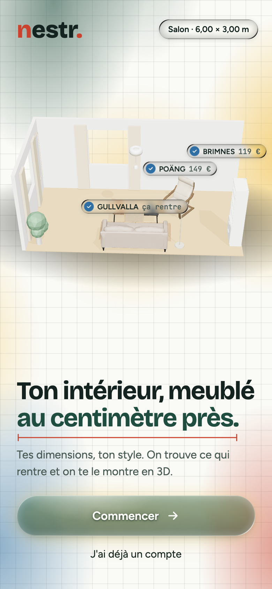
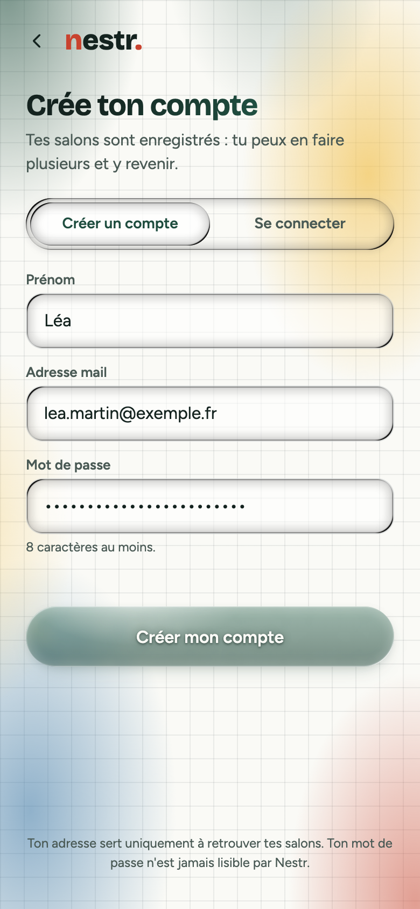
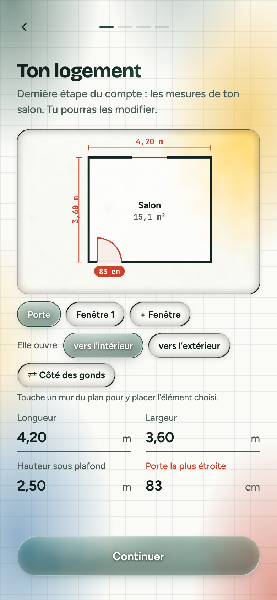
Démo · 2/7 · sous le capot
catalog_products476 produits réels en 13 catégories, relevés par les agents Hproduct_tagsstyle et famille de couleur de chaque produit, étiquetés par gpt-oss-120b|— le budget borne toute la recherche —|
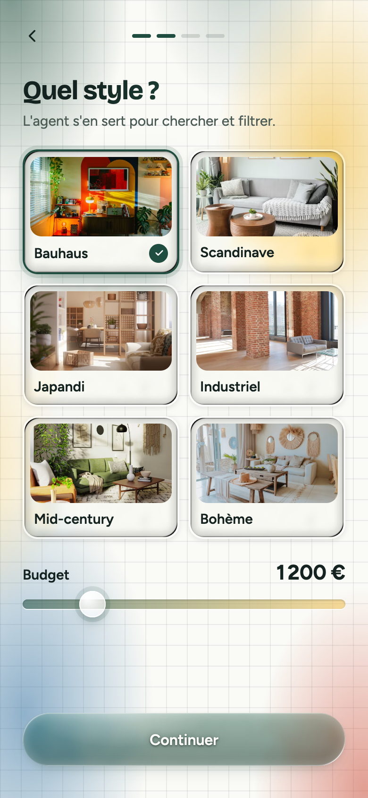
Démo · 3/7 · sous le capot
galeriephotos d'inspiration classées par thème, ou tes propres photosgemma-4-31Blit les photos : styles, couleurs, matières, mur d'accentgpt-oss-120blit le texte : ambiance, quantités, taille du canapé|— 3,9 s · médiane sur 93 lectures —|
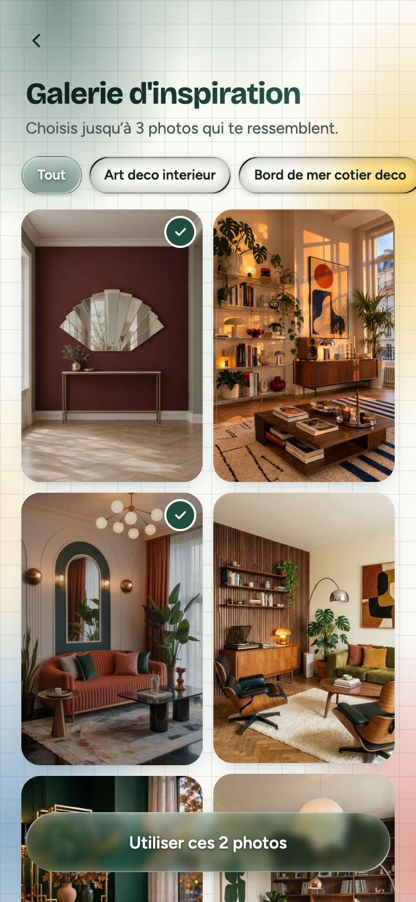
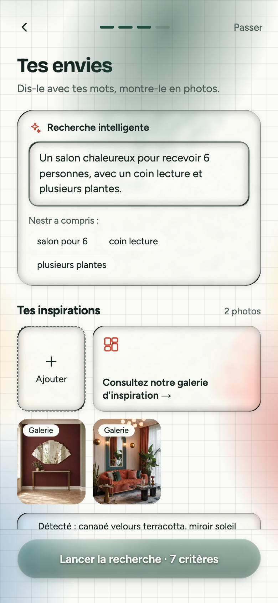
Démo · 4/7 · sous le capot
search_catalogfonction Postgres : ce qui rentre dans la pièce, passe la porte et tient dans le budgetgpt-oss-120bclasse les produits retenus, catégorie par catégoriestylisterelit le salon entier et remplace ce qui ne va pas ensemble : 1,8 s|— 4,7 s · médiane —|
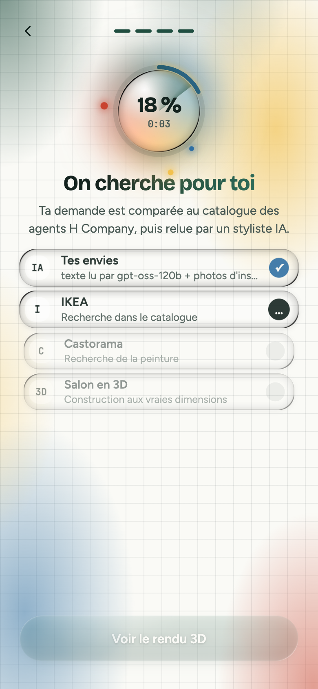
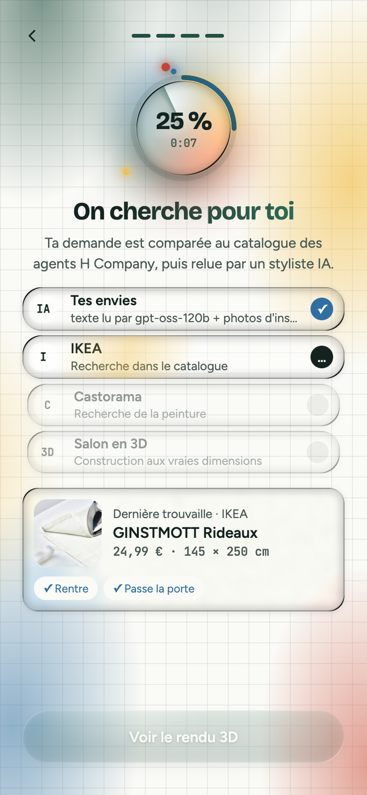
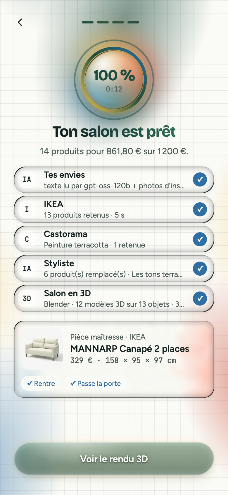
Démo · 5/7 · l'agent H en direct
Démo · 6/7 · sous le capot
Blender 5.3sans interface, piloté en Python : place chaque meublemodèles 3D439 modèles officiels IKEA, sinon TRELLIS (environ 30 s par meuble), sinon une forme simpleStorage · three.jsle fichier .glb va dans Supabase, l'appli l'afficheenregistrerle salon et son modèle 3D se retrouvent dans le profil|— 3,8 s · médiane —|
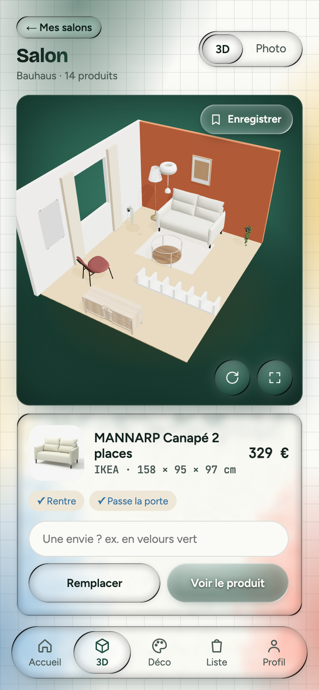
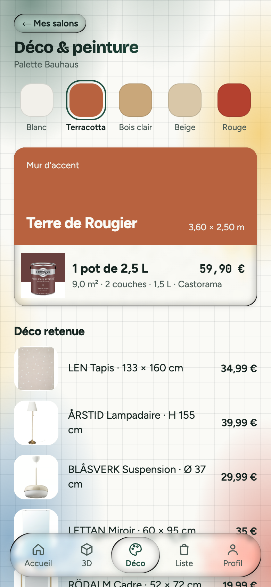
Démo · 7/7 · sous le capot
5 agents Hen parallèle, vérifient le prix du jour des 5 produits les plus chersagent_runsune ligne par session : durée, résultat, erreursi un agent échouele produit reste, sans la mention « prix vérifié »|— 38 s · 76 % de réussite —|
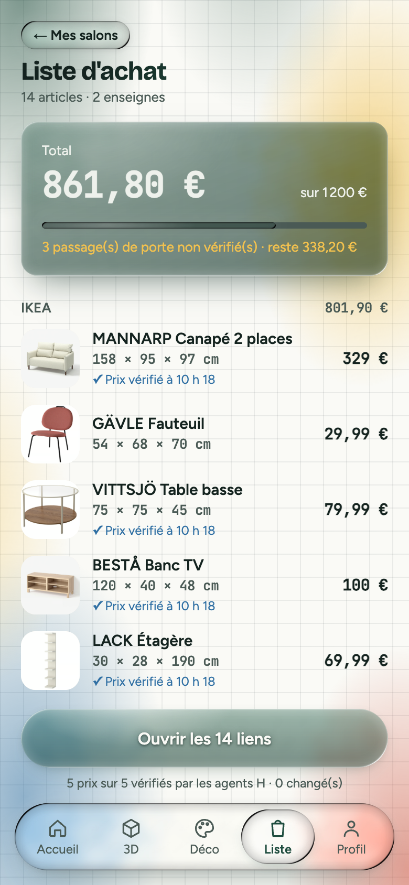
Résultats mesurés
Coût de run
Retour d'expérience sur l'Agent API
APPRIS
À FAIRE
Ton salon en 3D, avec de vrais produits qui rentrent.
Lili Sheppard, CEO · Hugo Fissier, CTO · Arquam El Mezouari, CPO · Victor Bella, CDO · Apolline Bouquet, CAO
Team 12 · Hackathon Build The Future · Eugenia × H Company · nester-mu.vercel.app